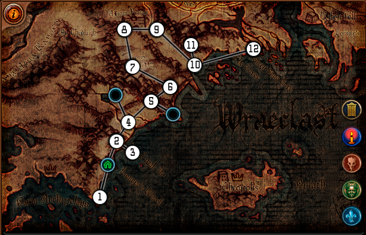
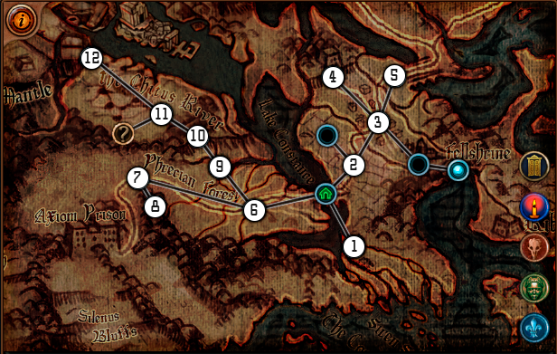
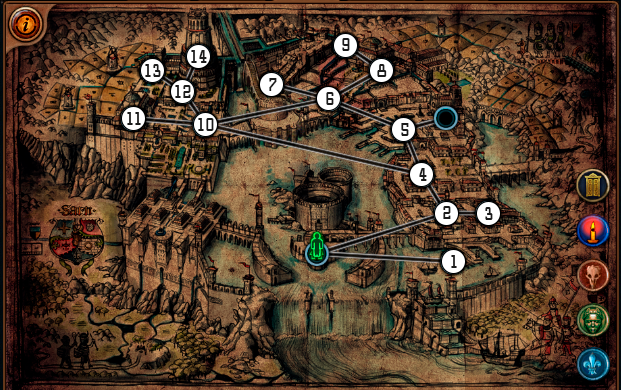
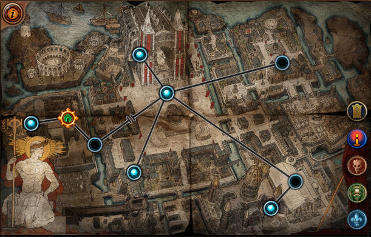
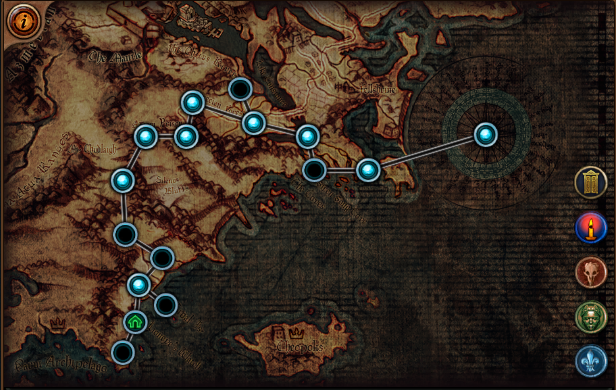
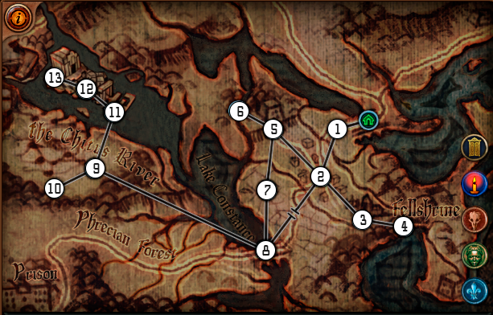
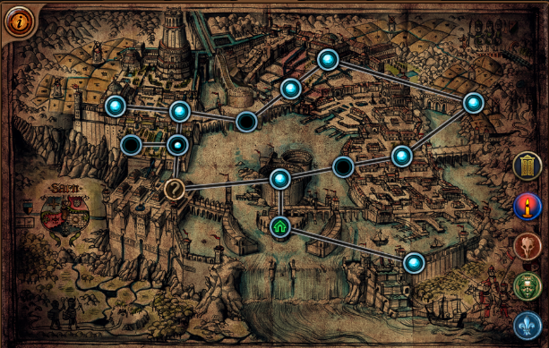
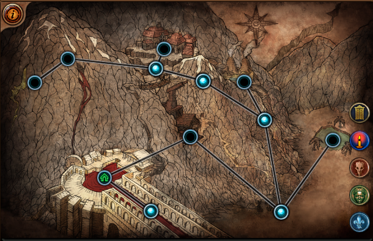

-

- Убиваем босса в конце, Берем в награду Волна холода
- Бежим до портала
- Убиваем босса - тп в город - берем Ртутный флакон
- Берем 3 квестовых предмета, идем в заводь
- Просто бежим
- Бежим
- Бежим
- Убиваем босса, можно пройти испытание (зеленый черепок)
- Как зашли на локу, берем портал, тп в город, берем награду Урон приспешников
- Ищем Грот разбитых кораблей
- берем итем, выходим, убиваем Фергрейфса, идем дальше в 12
- Убиваем Финал босса - идем во 2й акт
-

- Бежим до города
- Бежим до Перекрестка (3)
- Бежим до Обители грехов (4)
- Зачищаем, в конце берем предмет
- Убиваем Крайтлина
- Бежим до Западного леса
- Помогаем Алире, убиваем челов в конце дороги, ищем Покои ткачихи(8)
- Убиваем Ткачиху, сдаем квесты, идем в Топь(9)
- Убиваем Дуба, ищем портал и проход(рядом с порталом)
- Бежим в Северный лес(11)
- Бежим в Пещеры(12)
-

- Убиваем челика, болтаем с Клариссой, идем в город
- Ищем Крематорий, зачищаем, возвращаемся к Кларисса за ключом
- Идем в Трущобы(2) ищем Канализация(4)
- Бежим до Рынок(5)
- Бежим до Передовая(6)
- Ищем Портал, рядом квестовый итем, потом идем в Доки(7), возвращаемся на Передовую(6) идем в Храм Солярис(8)
- Ищем Предмет, Портал
- Ищем уровень 2
- Болтаем с нпс, берем все награды, возвращаемя в Канализация(4) открываем проход из соплей
- Ищем храм Лунарис
- Зачищаем до 2го-уровня и босса, возвращаемся в Лагерь Эбенового Легиона(10) идем в Имперские сады(12)
- Ищем Библиотека(13), делаем квест, берем Голодное остервенение
- Возвращаемся в Имперские сады(12), ищем Перст Господень(14)
- Зачищаем, идем в 4й акт
-

-
Тут хуй знает как написать, акт меняется по ходу.
- Узилище
- Башня надзирателя
- Изолятор
- Площадь Ориата
- Суды жрецов
- Обитель Невинности - убиваем Босса Тут акт меняется
- Подожженные суды
- Разрушенная площадь
- Костница
- Крыша храма - Убиваем Финал Босса
- Идем в 6-й акт
-

-
Просто бежим весь акт в самый конец
-

- Бежим
- Идем в Руины
- Идем в Склеп
- Берем квестовый итем, идем в Обитель грехов
- Ищем машину, запускаем Карта малигаро
- Проходим карту, убиваем босса, возвращаемся через портал, идем на 2й уровень Обитель грехов ищем Берлога
- Просто бежим
- Просто бежим
- Ищем Чащоба
- Поднимаем всех Светлячков, возвращаемся в Северный лес идем в Переешек
- Бежим
- Ищем квестовую бабу и проход
- Бежим, убиваем босса, идем в 8й акт
-

- Бежим в канализацию, дальше по правой стороне, до храма солярис ур.2 лутаем красное яйцо. Дальше бежим в левую часть в храм лунарис ур.2 лутаем синее яйцо.
- Между храмами на Портовом мосту по середине комната финал босса, вставляем яйца идем в 9 акт
-
Тут стопаемся, начинаем фармить Экспедицию 50-65, до получения первых предметов и респека.